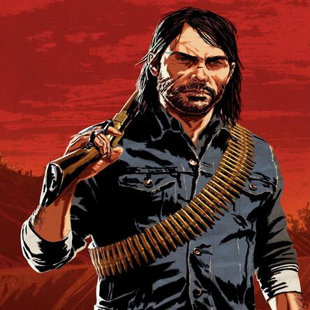
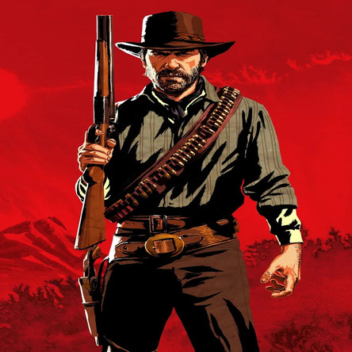

Gangue Van Der Linde
Dutch convenceu Hosea, que se descreveu como um "degenerado", de que eles poderiam encontrar a redenção de suas vidas pecaminosas roubando dos ricos e dando aos pobres, semelhante ao conto medieval de Robin Hood. Dutch tinham uma visão anarquista de um mundo sem governo ou interferência corporativa, uma "utopia selvagem" livre das pressões e da intolerância da civilização. Ele se via como um revolucionário, e pensava que a gangue poderia ser um exemplo para outros que poderiam seguir seu exemplo Eles começaram a enganar e roubar as pessoas que eles acreditavam que mais mereciam

Personagens


John Marston

Arthur Morgan
Dutch Van Der Linde
Micah Bell

Rondônia

Roraima


Tocantins